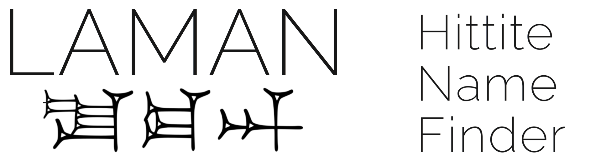

How it works
The database consists of a list of names which can be filtered and searched, each one provided with a set of metadata. The name forms displayed in the grid items visible to the user correspond to normalized spellings of the attested forms. When two or more normalized spellings are thought to represent variants of one and the same name, one of them is arbitrarily considered as the “primary” form while the other one(s) are marked as “secondary” forms. By clicking on the grid items detail infos are displayed in a pop-up window, including the indication of whether the name is treated as a secondary form or not. NB: the literature is booked at the primary entry only, so for retrieving literature on e.g. “Kantiputti” one needs to look after the relevant primary form, in this case “Kantipuitti.”
“Correspondences” between two or more different names are noted in the detail info and can be displayed by clicking on the various grid items. E.g. for ALLATUM the following correspondences are listed: Allani, EREŠ.KI.GAL, and UTU URUArinna.